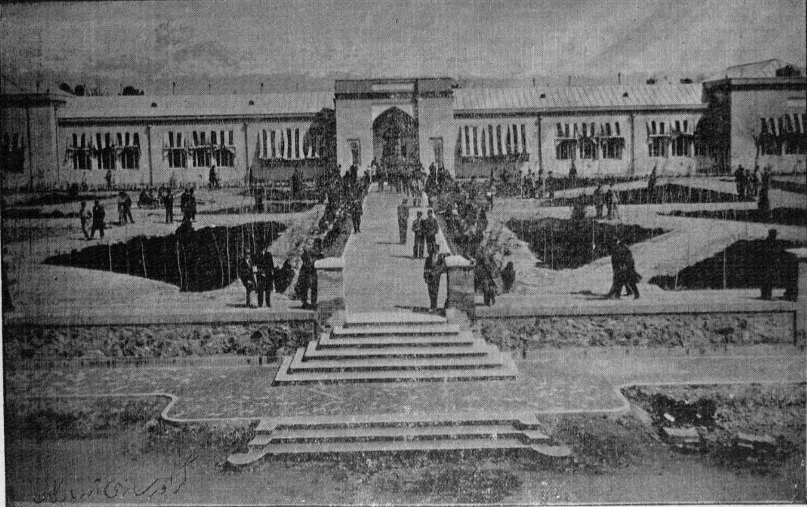
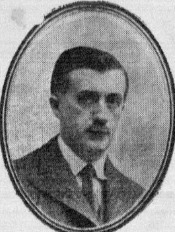
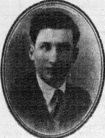
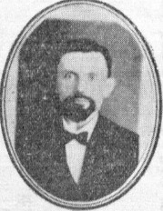
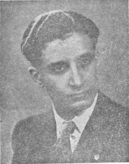
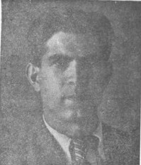
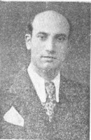
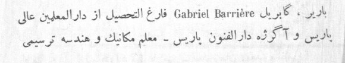
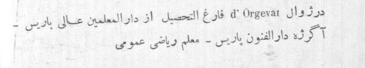
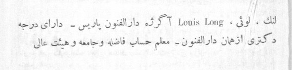

A Renaissance in Mathematics Education in Iran: 1928
Two paths to the future of mathematics: one in Tehran, the other in Europe.
Amir Asghari

The central building of Dār al-Moʿallemin-e ʿĀli, Tehran. From the History of Dār al-Moʿallemin-e ʿĀli, 1933. [2]
Two paths in one year
In 1928 (1307 in the Iranian calendar), two new paths opened up for studying mathematics in Iran. One led to Europe, through the passage of the law on sending students abroad; the other began in Tehran, with the establishment of Dār al-Moʿallemin-e ʿĀli, the Higher Teachers’ Training College. The two decisions were made at almost the same time, but I do not know to what extent they were part of a single plan. In any event, both responded to an increasingly pressing need: the expansion of education in Iran.
The law on sending students abroad required the government to send at least one hundred students each year to study subjects including mathematics, natural sciences, medicine, engineering and education. [1, 5] In the same year, Dār al-Moʿallemin-e ʿĀli was established to train teachers for secondary schools. The History of Dār al-Moʿallemin-e ʿĀli, written to mark the end of its fifth year, explained the reason for its establishment as follows: [2]
“In recent years, the number of primary schools has increased, and several full secondary schools have opened in Tehran and some provinces. The need for teachers capable of teaching in full secondary schools has therefore grown. For this reason, in 1307 [1928], Mr Eʿtemād al-Dowleh Qaragözlü, Minister of Education, established Dār al-Moʿallemin-e ʿĀli.”
Studying mathematics in Tehran
Dār al-Moʿallemin-e ʿĀli admitted students to five sections: philosophy and literature; history and geography; mathematics; physics and chemistry; and natural sciences. The course lasted three years, and its graduates received a licence qualification. But there was something in the institution’s curriculum that, given its purpose, was both surprising and consequential: education courses were not compulsory for students in every section. Only those who intended to become teachers had to study education alongside their own subjects. [2]
It was surprising because Dār al-Moʿallemin-e ʿĀli had been established to train secondary-school teachers. It was consequential because it gave students whose interest in mathematics outweighed their interest in teaching an opportunity to pursue mathematics for its own sake.
The three-year syllabus of the mathematics section shows the stage mathematics education in Iran had reached. “Hesāb-e Fāzeleh va Jāmeʿeh”, or differential and integral calculus, occupied a striking proportion of the curriculum. One might almost say that a degree in mathematics at the time was, above all, a degree in differential and integral calculus. [2]
Figure 1. Original syllabus, p. 16 of the History of Dār al-Moʿallemin-e ʿĀli. [2]See it in the archive →
Three-year syllabus of the mathematics section — English translation
Subject / practical work
Teaching hours per week
Practical hours per week
First year
General mathematics: completion of algebra; introduction to differential and integral calculus; analytic geometry; mechanics
7
4
Descriptive geometry
3
—
French-language seminar¹
1
—
Practical work in descriptive geometry
—
3
Total per week
11
7
Second year
Differential and integral calculus: functions of a real variable and their geometrical applications
4
—
Descriptive geometry: polyhedra, surfaces of revolution, sections, and their applications
3
—
Mechanics: equilibrium of forces, motion, and the theory of forces
3
—
Practical work in descriptive geometry
—
3
Mechanics laboratory
—
2
Total per week
10
5
Third year
Differential and integral calculus: analytic functions and differential equations
4
—
Mechanics: rigid-body mechanics, collisions, the theory of water forces, and gravitation
3
—
Advanced astronomy
2
—
Modern logic
1
—
Mechanics laboratory
—
2
Total per week
10
2
¹ The original explains that this seminar familiarised students with spoken French, to help them understand the courses taught in French.
But having a curriculum was one thing; having teachers to teach it was another. In the early years, the mathematics courses at Dār al-Moʿallemin-e ʿĀli were taught by three French teachers: Gabriel Barrière, d’Orgeval and Louis Long. As secondary education expanded and the demand for higher education grew, such a small number of foreign teachers could not meet that need indefinitely. This was where the other path — sending students to Europe — acquired new importance.

Gabriel Barrière
Graduate of the Higher Teachers’ College in Paris; agrégé; teacher of mechanics and descriptive geometry.

d’Orgeval
Graduate of the Higher Teachers’ College in Paris; agrégé; teacher of general mathematics.

Louis Long
Agrégé in Paris, with a doctorate from the same institution; teacher of differential and integral calculus and advanced astronomy.
Figure 2. The three French teachers. English translations of the labels in the historical source. [2]
Two paths in competition
Looking back at the eventual outcome of these two programmes, we might imagine that they complemented one another from the start. For those making decisions at the time, however, the relationship was far less straightforward. In the debates of the National Consultative Assembly on 12 September 1929 (21 Shahrivar 1308), the Ministry of Education explicitly explained that the attraction of studying abroad had made it difficult to recruit students to Dār al-Moʿallemin-e ʿĀli. [3]
The answer was not to abandon one path in favour of the other. Rather than halt overseas study, the Assembly chose to strengthen Dār al-Moʿallemin-e ʿĀli: financial support for students during their studies, easier access to employment in schools and government offices after obtaining the “diploma of licence”, and the possibility of going abroad without a competitive examination to complete their studies in the art of teaching. [3] In this way, studying in Iran and continuing one’s studies abroad could become two stages of the same journey rather than competing alternatives.
Going abroad and coming back
As the number of secondary-school graduates increased, so too did the demand for higher education, and then for lecturers to teach in institutions of higher learning. It was hoped that at least some of the students sent abroad would return to meet this need. In a number of cases, that hope was realised. [4, 5]
For example, Ali Afzali-Pour, Asadollah Al-Buyeh and Abolqasem Ghaffari were all sent abroad in 1928 and all three were among the teachers at Dāneshsarā-ye ʿĀli in the academic year 1940–41. [4, 5] In the meantime, Dār al-Moʿallemin-e ʿĀli had been renamed Dāneshsarā-ye ʿĀli, and part of higher education had continued within the newly founded University of Tehran. This time, alongside foreign teachers, those who had studied in Europe and returned to Iran were teaching modern mathematics.
The three yearbook entries, in English translation

Ali Afzali-Pour
Dr Ali Afzali-Pour — teacher of differential and integral calculus, arithmetic and geometry. After obtaining his primary-school certificate and a secondary-school certificate from the Central Teachers’ College, he was sent to Europe in 1928. He spent four years in Nancy and Bordeaux, obtained a licence in science and completed his doctoral thesis in Paris. He received his doctorate in the winter of 1935–36 (Dey 1314), returned to Iran immediately afterwards and was appointed associate professor of mathematics at the Higher Teachers’ College and the Faculty of Science.

Asadollah Al-Buyeh
Dr Asadollah Al-Buyeh — professor of mathematics (analytic geometry). After completing secondary education in 1928, he was sent to Europe. During three years at the Faculty of Sciences in Nancy, he obtained certificates in general mathematics, differential and integral calculus, mechanics and higher geometry. He then studied at the University of Paris from 1932 to 1935–36, writing his doctoral thesis in higher geometry. He received his doctorate in early 1936 (Bahman 1314) and was appointed associate professor of mathematics at the Higher Teachers’ College in the spring of 1936 (Farvardin 1315).

Abolqasem Ghaffari
Dr Abolqasem Ghaffari — associate professor of advanced algebra, differential and integral calculus, and analysis. He was born in Tehran in 1907 (1286 SH). He attended State Primary School No. 4 and completed his secondary education at Dār al-Fonun. Having obtained the scientific secondary-school diploma in 1928, he took part that year in the first competitive examination for students to be sent to Europe, and left for France in the late summer of 1928 (Shahrivar 1307). He spent his first year in the final mathematics class at the school in Tournon. The following year he was admitted to the Faculty of Sciences in Nancy, where he passed examinations in general mathematics, differential and integral calculus, rational mechanics and general physics, and obtained a licence in mathematics teaching. He subsequently passed two advanced examinations in analysis and astronomy at the Faculty of Sciences in Paris, and prepared a thesis in analysis. Having defended the thesis in late November 1936 (early Azar 1315), he was awarded a doctorate in mathematical sciences by the University of Paris. He then spent three months training in astronomical work at the Paris Observatory and was admitted to membership of the French Mathematical Society that same year. He returned to Iran in March 1937 (late Esfand 1315) and, from 28 March 1937 (8 Farvardin 1316), was appointed associate professor of mathematics at the Higher Teachers’ College and the Faculty of Science.
Figures 3–5. Portraits and entries from the Yearbook of the Higher Teachers’ College, 1940–41. [4]
Those who began at home
Yet Dār al-Moʿallemin-e ʿĀli was not merely an institution that would later benefit from teachers returning from Europe. It also educated students who went on to become teachers and writers of mathematics themselves. Gholamhossein Mosaheb and Abbas Riazi Kermani were among them. Both entered the mathematics section in 1928 and graduated in 1931; both subsequently went abroad to continue their studies, earned doctorates and returned to Iran.
Mohsen Hashtroodi was someone who followed both paths. In 1928 he was sent to Europe to study engineering, but returned to Iran and entered the mathematics section of Dār al-Moʿallemin-e ʿĀli in 1929. Three years later, in 1932, after graduating, he went to France again — this time to study mathematics. [2, 5]
Among Hashtroodi’s fellow students was Ahmad Birashk, who went on to play an important role in mathematics education, textbook writing and the founding of a school. Taghi Hourfar, too, went abroad in 1932 to continue his mathematical studies. After his return, he worked with Birashk and taught mathematics in the Faculty of Science at the University of Tehran. [7] Dār al-Moʿallemin, and later Dāneshsarā-ye ʿĀli, thus provided a path both for the mathematicians of the future and for the teachers who would teach mathematics to subsequent generations.
From Dār al-Moʿallemin to Dāneshsarā
The year 1928 marked the beginning of a long process, one that called for new decisions at every stage. On 10 March 1934 (19 Esfand 1312), the National Consultative Assembly approved the change of name from Dār al-Moʿallemin to Dāneshsarā. [6] Yet the introduction to the History of Dār al-Moʿallemin-e ʿĀli, dated 31 May 1933 (10 Khordad 1312, earlier in the same Iranian year), still bore the institution’s earlier name. [2]
This change of name can be seen as a step towards removing gender distinctions from the terminology and structure of teacher education. Previously, Dār al-Moʿallemin had been for the education of male teachers and Dār al-Moʿallemāt for female teachers. Dār al-Moʿallemin offered both an elementary course, for training primary-school teachers, and a higher course, for training secondary-school teachers; Dār al-Moʿallemāt offered only the elementary course. The new name paved the way for the next step: admitting both women and men to Dāneshsarā. Women began to enter in 1935. [8]
Why 1928?
The significance of 1928 (1307 in the Iranian calendar) lies in the emergence, side by side, of two new possibilities, neither replacing the other: studying higher mathematics in Iran and going abroad for further study. At first the two paths even competed, but gradually they came together. Out of that connection emerged a generation able to teach what it had learned in Iran, develop it further and pass it on to those who followed.
In this sense, 1928 can be regarded as the beginning of a renaissance in mathematics education in Iran.
Tārikhcheh-ye Dār al-Moʿallemin-e ʿĀli [History of the Higher Teachers’ Training College], 1312 SH (1933); prepared to mark the end of the institution’s fifth year. The copy used is held at the Grand Ayatollah Borujerdi Library.
University of Tehran, Sālnāmeh-ye Dāneshsarā-ye ʿĀli [Yearbook of the Higher Teachers’ College], academic year 1319–1320 SH (1940–41). Tehran: Chāp-e Khodkār-e Irān, 1319 SH (1940).
Abdolhossein Nava’i and Elham Malekzadeh (eds.), Iranian Students in Europe: Documents Relating to the Law on Sending Students Abroad (1307–1313). Tehran: National Library and Archives of the Islamic Republic of Iran, 1382 SH (2003).
Dates are given in the Gregorian calendar. The sources use the Iranian solar calendar (SH), whose year 1307 ran from March 1928 to March 1929; where a source gives only a year, the Gregorian year in which most of it fell is used, and exact dates keep the original in brackets. The photograph of the central building, the syllabus and the portraits of the three French teachers are from the History of Dār al-Moʿallemin-e ʿĀli (1933) [2]; the three portraits and yearbook entries are from the Yearbook of the Higher Teachers’ College, 1940–41 [4].
حکایتها · تهران و اروپا · ۱۳۰۷
رنسانس آموزش ریاضیات ایران: ۱۳۰۷
دو راه برای آیندهٔ ریاضیات: یکی در تهران، دیگری در اروپا
امیر اصغری
عمارت مرکزی دارالمعلمین عالی، تهران. از «تاریخچهٔ دارالمعلمین عالی»، ۱۳۱۲. [۲]
دو راه در یک سال
در سال ۱۳۰۷ دو راه تازه برای تحصیل ریاضیات در ایران گشوده شد. یکی به اروپا میرسید، با تصویب قانون اعزام محصل؛ دیگری در تهران آغاز میشد، با تأسیس دارالمعلمین عالی. این دو تصمیم تقریباً همزمان گرفته شدند، اما اینکه تا چه حد حاصل برنامهای مشترک بودند، برای من روشن نیست. هر دو، به هر حال، پاسخی به نیازی روزافزون بودند: گسترش آموزش در ایران.
قانون اعزام محصل به خارج از کشور، دولت را موظف میکرد سالانه دستکم صد دانشجو را برای تحصیل در رشتههایی از جمله علوم ریاضی، علوم طبیعی، پزشکی، مهندسی و تعلیموتربیت به خارج بفرستد. [۱، ۵] در همان سال، دارالمعلمین عالی نیز برای تربیت نیروی مورد نیاز مدارس متوسطه تأسیس شد. در «تاریخچهٔ دارالمعلمین عالی»، که به مناسبت پایان پنجمین سال فعالیت آن نوشته شده، علت تأسیس چنین آمده است: [۲]
«در سنوات اخیر عدهٔ مدارس ابتدایی رو به فزونی گذاشت و چند باب مدرسهٔ متوسط کامل نیز در طهران و بعضی ایالات مفتوح گردید و احتیاج به معلمینی که بتوانند در مدارس متوسط کامل تدریس نمایند بیشتر شد. از این رو در سال ۱۳۰۷ آقای اعتمادالدوله قراگزلو وزیر معارف اقدام بتأسیس دارالمعلمین عالی فرمودند.»
ریاضی خواندن در تهران
دارالمعلمین عالی در پنج شعبهٔ فلسفه و ادبیات، تاریخ و جغرافیا، علوم ریاضی، فیزیک و شیمی، و علوم طبیعی دانشجو میپذیرفت. دورهٔ تحصیل سهساله بود و فارغالتحصیلان «لیسانسیه» محسوب میشدند. اما در برنامهٔ این مؤسسه نکتهای وجود داشت که، با توجه به هدف تأسیس آن، هم عجیب بود و هم تأثیرگذار: درسهای تربیتی جزو درسهای الزامی همهٔ شعبهها نبود. تنها دانشجویانی که داوطلب شغل معلمی بودند، میبایست در کنار درسهای رشتهٔ خود، مواد مربوط به علوم تربیتی را نیز بگذرانند. [۲]
عجیب بود، زیرا دارالمعلمین عالی برای تربیت معلم مدارس متوسطه تأسیس شده بود؛ و تأثیرگذار بود، زیرا به دانشجویانی که علاقهشان به ریاضیات از علاقهشان به معلمی بیشتر بود، فرصت میداد در خودِ ریاضیات پیش بروند.
فهرست درسهای سهسالهٔ شعبهٔ علوم ریاضی نشان میدهد که ریاضیات آن روزِ ایران در چه مرحلهای قرار داشت. «حساب فاضله و جامعه»، یعنی حساب دیفرانسیل و انتگرال، سهمی چشمگیر از برنامه را به خود اختصاص داده بود؛ تا آنجا که میتوان گفت لیسانس ریاضی آن دوره، بیش از هر چیز، لیسانس حساب فاضله و جامعه بود. [۲]
تصویر ۱. فهرست دروس سهسالهٔ شعبهٔ علوم ریاضی در تاریخچهٔ دارالمعلمین عالی، ص ۱۶. [۲]در اسناد و تصاویر ببینید ←
اما داشتن برنامهٔ درسی یک چیز بود و داشتن استاد برای تدریس آن چیز دیگر. در سالهای نخست، درسهای ریاضی دارالمعلمین عالی را سه مدرس فرانسوی تدریس میکردند: گابریل باریئر، دُرژوال و لوئی لونگ. با گسترش آموزش متوسطه و افزایش نیاز به تحصیلات عالی، نمیشد این نیاز را برای همیشه با همین شمار اندک مدرس خارجی پاسخ داد. در اینجا راه دیگر، یعنی اعزام دانشجو به اروپا، اهمیت تازهای مییافت.
گابریل باریئرGabriel Barrière

دُرژوالd’Orgeval

لوئی لونگLouis Long

تصویر ۲. سه مدرس فرانسوی و معرفینامههای آنان در تاریخچهٔ دارالمعلمین عالی. [۲]
دو راهی که با هم رقابت میکردند
امروز، وقتی سرانجام این دو برنامه را میبینیم، ممکن است تصور کنیم که از همان آغاز مکمل یکدیگر بودهاند. اما برای تصمیمگیرندگان آن روز، ارتباطشان به این سادگی نبود. در مذاکرات مجلس شورای ملی در ۲۱ شهریور ۱۳۰۸، وزارت معارف بهصراحت توضیح داد که جذابیت اعزام به خارج، جذب دانشجو برای دارالمعلمین عالی را دشوار کرده است. [۳]
راهحل، کنارگذاشتن یکی به سود دیگری نبود. مجلس، بهجای قطع اعزام، به تقویت موقعیت دارالمعلمین عالی روی آورد: کمکخرج برای دانشجویان در دوران تحصیل، تسهیل استخدام در مدارس و ادارات دولتی پس از گرفتن «دیپلم لیسانس»، و امکان اعزام به خارج بدون امتحان مسابقه برای تکمیل فن تعلیم و تربیت. [۳] به این ترتیب، تحصیل در ایران و ادامهٔ تحصیل در خارج میتوانستند بهجای رقابت، دو مرحله از یک مسیر باشند.
رفتن و بازگشتن
با افزایش شمار فارغالتحصیلان دبیرستان، نیاز به تحصیلات عالی و سپس به استادانی برای تدریس در مؤسسات آموزش عالی نیز بیشتر میشد. امید آن بود که دستکم بخشی از دانشجویان اعزامی پس از بازگشت به این نیاز پاسخ دهند. در شماری از پروندهها این امید تحقق یافت. [۴، ۵]
برای نمونه، علی افضلیپور، اسدالله آلبویه و ابوالقاسم غفاری هر سه در سال ۱۳۰۷ به خارج اعزام شدند و هر سه در سال تحصیلی ۱۳۱۹–۱۳۲۰ در شمار استادان دانشسرای عالی بودند. [۴، ۵] دارالمعلمین عالی در این فاصله به دانشسرای عالی تغییر نام داده بود و بخشی از آموزش عالی نیز در ساختار دانشگاه تازهتأسیس تهران ادامه یافته بود. اینبار در کنار مدرسهای خارجی، کسانی که در اروپا تحصیل کرده و به ایران بازگشته بودند، ریاضیات جدید را تدریس میکردند.
با این همه، دارالمعلمین عالی فقط جایی نبود که بعدها از استادان بازگشته از اروپا بهره ببرد. خود نیز دانشجویانی پرورش داد که در نسلهای بعد به استادان و نویسندگان ریاضی تبدیل شدند. غلامحسین مصاحب و عباس ریاضی کرمانی از جملهٔ آنان بودند. هر دو در سال ۱۳۰۷ وارد رشتهٔ ریاضی شدند و در ۱۳۱۰ فارغالتحصیل شدند؛ سپس برای ادامهٔ تحصیل به خارج رفتند، دکتری گرفتند و به ایران بازگشتند.
محسن هشترودی از کسانی بود که هر دو راه را پیمود. در سال ۱۳۰۷ برای تحصیل مهندسی به اروپا اعزام شد، اما به ایران بازگشت و در سال ۱۳۰۸ وارد شعبهٔ ریاضی دارالمعلمین عالی شد. سه سال بعد، در ۱۳۱۱، پس از فارغالتحصیلی، بار دیگر راهی فرانسه شد؛ این بار برای تحصیل ریاضیات. [۲، ۵]
از همدورهایهای هشترودی، احمد بیرشک بود که در آموزش ریاضی، تألیف کتابهای درسی و تأسیس مدرسه نقش مهمی یافت. تقی هورفر نیز در سال ۱۳۱۱ برای ادامهٔ تحصیل ریاضی اعزام شد و پس از بازگشت با بیرشک همکاری کرد و در دانشکدهٔ علوم دانشگاه تهران به تدریس ریاضی پرداخت. [۷] دارالمعلمین، و سپس دانشسرای عالی، هم راهی برای پرورش ریاضیدانان آینده بود و هم جایی برای تربیت معلمانی که ریاضیات را به نسلهای بعد میآموختند.
از دارالمعلمین به دانشسرا
سال ۱۳۰۷ آغاز مسیری طولانی بود که در هر مرحله به تصمیمی تازه نیاز داشت. در ۱۹ اسفند ۱۳۱۲، مجلس شورای ملی تغییر نام دارالمعلمین به دانشسرا را تصویب کرد. [۶] این در حالی بود که مقدمهٔ «تاریخچهٔ دارالمعلمین عالی»، به تاریخ ۱۰ خرداد همان سال، هنوز نام پیشین مؤسسه را بر خود داشت. [۲]
این تغییر نام را میتوان گامی به سوی زدودن تمایز جنسیتی از نام و ساختار آموزش معلم دانست. پیش از آن، دارالمعلمین برای آموزش معلمان مرد و دارالمعلمات برای آموزش معلمان زن بود. دارالمعلمین هم دورهٔ مقدماتی داشت، برای تربیت معلمان دبستان، و هم دورهٔ عالی، برای تربیت معلمان دبیرستان؛ حال آنکه دارالمعلمات تنها دورهٔ مقدماتی داشت. نام تازه زمینه را برای گام بعدی فراهم کرد: پذیرش زنان و مردان در دانشسرا. ورود زنان در سال ۱۳۱۴ رخ داد. [۸]
چرا ۱۳۰۷؟
اهمیت سال ۱۳۰۷ در کنار هم قرارگرفتن دو امکان تازه بود، بیآنکه یکی جای دیگری را بگیرد: آموختن ریاضیات عالی در ایران و رفتن به خارج برای ادامهٔ تحصیل. این دو راه حتی در آغاز با یکدیگر رقابت داشتند، اما بهتدریج به هم پیوستند. نسلی از این پیوند پدید آمد که میتوانست آنچه را آموخته بود در ایران تدریس کند، بسط دهد و به نسل بعد بسپارد.
به این معنا، سال ۱۳۰۷ را میتوان آغاز رنسانس آموزش ریاضیات ایران دانست.
«تاریخچهٔ دارالمعلمین عالی»، ۱۳۱۲؛ به مناسبت پایان پنجمین سال فعالیت دارالمعلمین عالی. نسخهٔ مورد استفاده در کتابخانهٔ آیتاللهالعظمی بروجردی نگهداری میشود.
دانشگاه تهران، سالنامهٔ دانشسرای عالی، سال تحصیلی ۱۳۱۹–۱۳۲۰، تهران: چاپ خودکار ایران، ۱۳۱۹.
نوایی، عبدالحسین، و الهام ملکزاده (به کوشش). دانشجویان ایرانی در اروپا: اسناد مربوط به قانون اعزام محصل (از ۱۳۰۷ تا ۱۳۱۳). تهران: سازمان اسناد و کتابخانهٔ ملی جمهوری اسلامی ایران، ۱۳۸۲.
عکس عمارت مرکزی، فهرست دروس و تصویر سه مدرس فرانسوی از «تاریخچهٔ دارالمعلمین عالی» (۱۳۱۲) [۲] گرفته شده است؛ سه شرح حال از «سالنامهٔ دانشسرای عالی»، سال تحصیلی ۱۳۱۹–۱۳۲۰ [۴].